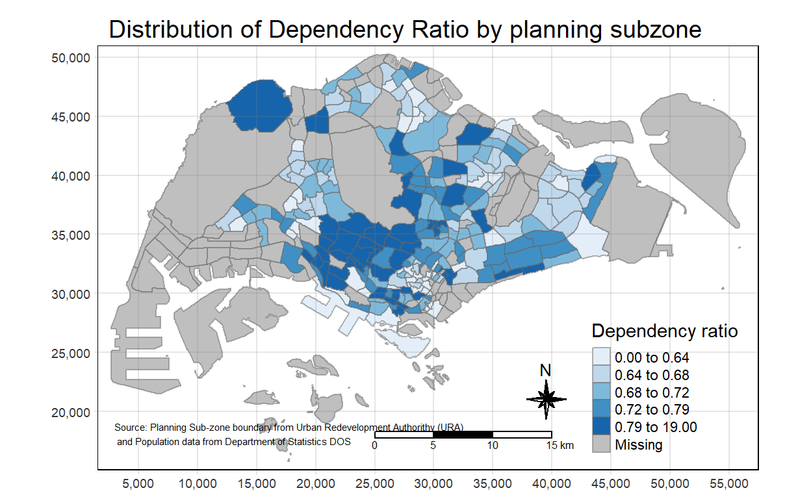
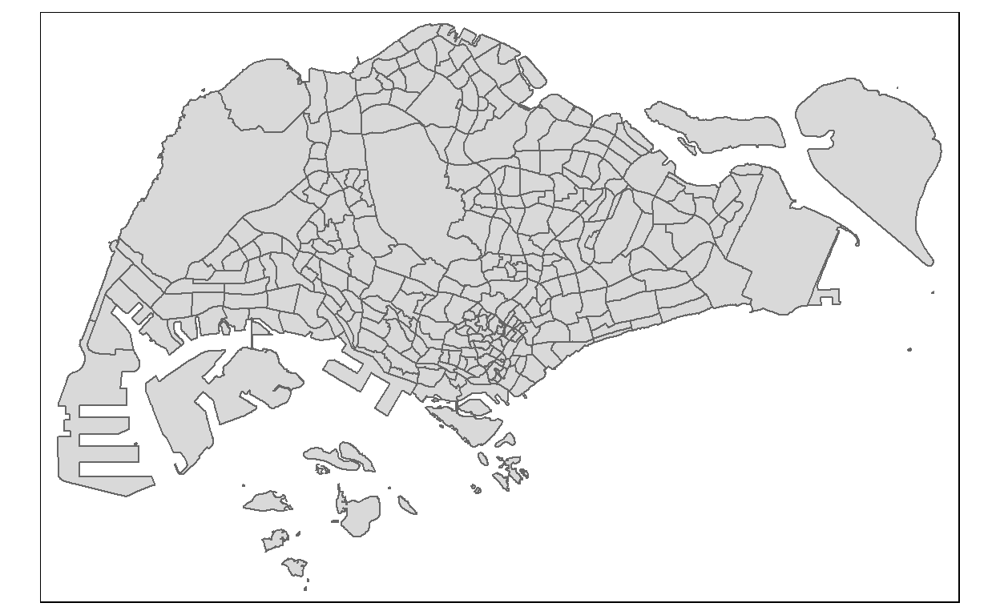
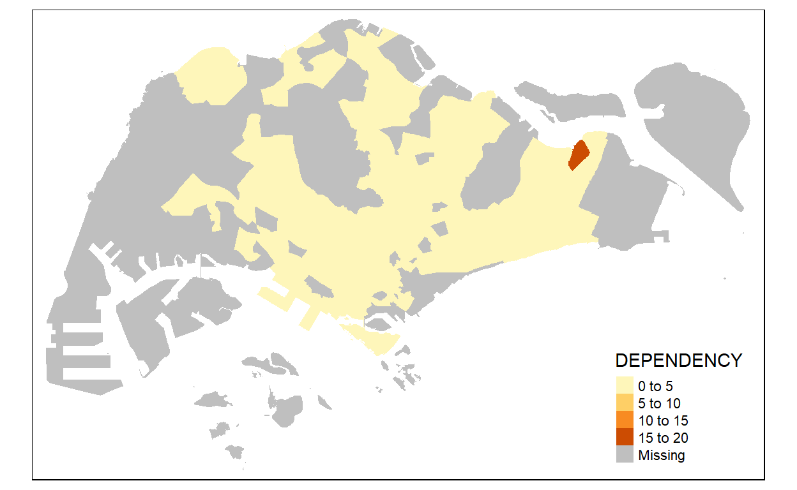
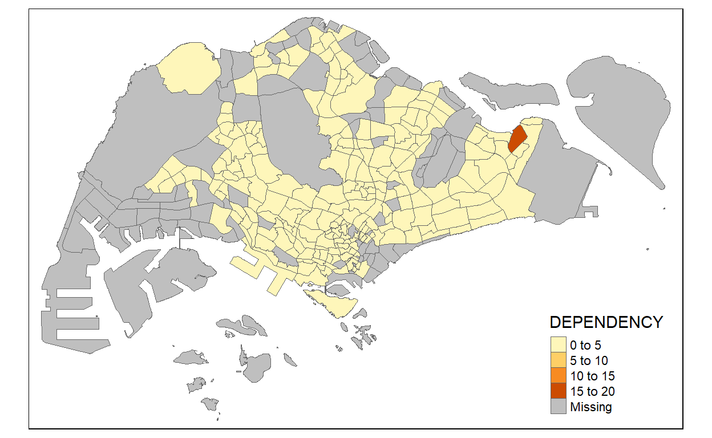
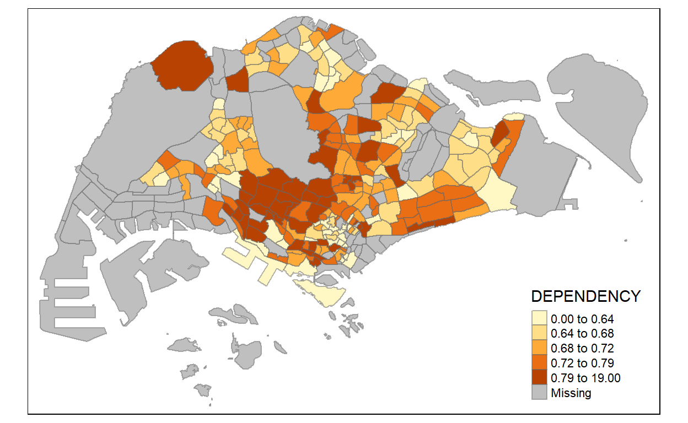
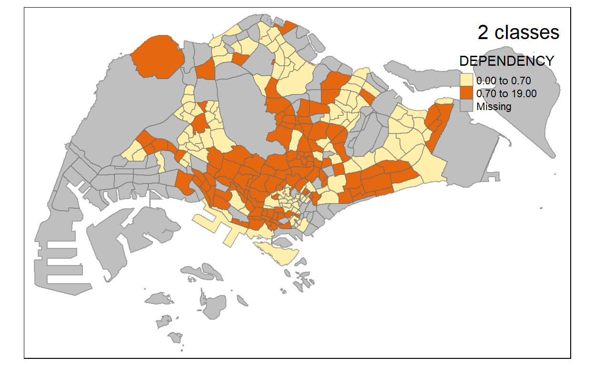

1. Importing Packages
packages = c('sf', 'tmap', 'tidyverse')
for (p in packages){
if(!require(p, character.only = T)){
install.packages(p)
}
library(p,character.only = T)
}
More about packages used: - sf: used for importing, managing, and processing geospatial data - tidyverse: used for importing, wrangling and visualising data. It consists of a family of R packages, such as: - readr for importing csv data, - readxl for importing Excel worksheet, - tidyr for manipulating data, - dplyr for transforming data, and - ggplot2 for visualising data - tmap: Used to plot high cartographic quality plots (Since plot() is mean for plotting the geospatial object for quick look)
2. Importing data in R
Data used: - MP14_SUBZONE_WEB_PL, a polygon feature layer in ESRI shapefile format, - Aspatial data file: Singapore Residents by Planning Area / Subzone, Age Group, Sex and Type of Dwelling, June 2011-2020 in csv format
2.1 Importing Geospatial Data into R
The code chunk below uses the st_read() function of sf package to import MP14_SUBZONE_WEB_PL shapefile into R as a simple feature data frame called mpsz.
mpsz <- st_read(dsn = "data/geospatial",
layer = "MP14_SUBZONE_WEB_PL")
Reading layer `MP14_SUBZONE_WEB_PL' from data source
`C:\aisyahajit2018\IS415\IS415_blog\_posts\2021-08-29-hands-on-exercise-3\data\geospatial'
using driver `ESRI Shapefile'
Simple feature collection with 323 features and 15 fields
Geometry type: MULTIPOLYGON
Dimension: XY
Bounding box: xmin: 2667.538 ymin: 15748.72 xmax: 56396.44 ymax: 50256.33
Projected CRS: SVY21- From the results above we can see that:
- there are 323 multipolygon features and 15 fields in the sf data frame.
- svy21 is the projected coordinates system
2.2 Examine the content of mpsz
mpsz
Simple feature collection with 323 features and 15 fields
Geometry type: MULTIPOLYGON
Dimension: XY
Bounding box: xmin: 2667.538 ymin: 15748.72 xmax: 56396.44 ymax: 50256.33
Projected CRS: SVY21
First 10 features:
OBJECTID SUBZONE_NO SUBZONE_N SUBZONE_C CA_IND
1 1 1 MARINA SOUTH MSSZ01 Y
2 2 1 PEARL'S HILL OTSZ01 Y
3 3 3 BOAT QUAY SRSZ03 Y
4 4 8 HENDERSON HILL BMSZ08 N
5 5 3 REDHILL BMSZ03 N
6 6 7 ALEXANDRA HILL BMSZ07 N
7 7 9 BUKIT HO SWEE BMSZ09 N
8 8 2 CLARKE QUAY SRSZ02 Y
9 9 13 PASIR PANJANG 1 QTSZ13 N
10 10 7 QUEENSWAY QTSZ07 N
PLN_AREA_N PLN_AREA_C REGION_N REGION_C
1 MARINA SOUTH MS CENTRAL REGION CR
2 OUTRAM OT CENTRAL REGION CR
3 SINGAPORE RIVER SR CENTRAL REGION CR
4 BUKIT MERAH BM CENTRAL REGION CR
5 BUKIT MERAH BM CENTRAL REGION CR
6 BUKIT MERAH BM CENTRAL REGION CR
7 BUKIT MERAH BM CENTRAL REGION CR
8 SINGAPORE RIVER SR CENTRAL REGION CR
9 QUEENSTOWN QT CENTRAL REGION CR
10 QUEENSTOWN QT CENTRAL REGION CR
INC_CRC FMEL_UPD_D X_ADDR Y_ADDR SHAPE_Leng
1 5ED7EB253F99252E 2014-12-05 31595.84 29220.19 5267.381
2 8C7149B9EB32EEFC 2014-12-05 28679.06 29782.05 3506.107
3 C35FEFF02B13E0E5 2014-12-05 29654.96 29974.66 1740.926
4 3775D82C5DDBEFBD 2014-12-05 26782.83 29933.77 3313.625
5 85D9ABEF0A40678F 2014-12-05 26201.96 30005.70 2825.594
6 9D286521EF5E3B59 2014-12-05 25358.82 29991.38 4428.913
7 7839A8577144EFE2 2014-12-05 27680.06 30230.86 3275.312
8 48661DC0FBA09F7A 2014-12-05 29253.21 30222.86 2208.619
9 1F721290C421BFAB 2014-12-05 22077.34 29893.78 6571.323
10 3580D2AFFBEE914C 2014-12-05 24168.31 30104.18 3454.239
SHAPE_Area geometry
1 1630379.3 MULTIPOLYGON (((31495.56 30...
2 559816.2 MULTIPOLYGON (((29092.28 30...
3 160807.5 MULTIPOLYGON (((29932.33 29...
4 595428.9 MULTIPOLYGON (((27131.28 30...
5 387429.4 MULTIPOLYGON (((26451.03 30...
6 1030378.8 MULTIPOLYGON (((25899.7 297...
7 551732.0 MULTIPOLYGON (((27746.95 30...
8 290184.7 MULTIPOLYGON (((29351.26 29...
9 1084792.3 MULTIPOLYGON (((20996.49 30...
10 631644.3 MULTIPOLYGON (((24472.11 29...2.3 Import Attribute Data into R
popdata <- read_csv("data/aspatial/respopagesextod2011to2020.csv")
2.4 Data Preparation
Prepare data table with variables like: - YOUNG: age group 0 to 4 until age groyup 20 to 24, - ECONOMY ACTIVE: age group 25-29 until age group 60-64, - AGED: age group 65 and above, - TOTAL: all age group, and
- DEPENDENCY: the ratio between young and aged against economy active group - PA and SZ fields can be used as unique identifiers to geocode to MP14_SUBZONE_WEB_PL shapefile*
2.4.1 Data Wrangling
popdata2020 <- popdata %>%
filter(Time == 2020) %>%
group_by(PA, SZ, AG) %>%
summarise(`POP` = sum(`Pop`)) %>%
ungroup()%>%
pivot_wider(names_from=AG,
values_from=POP) %>%
mutate(YOUNG = rowSums(.[3:6])+rowSums(.[12])) %>%
mutate(`ECONOMY ACTIVE` = rowSums(.[7:11])+rowSums(.[13:15]))%>%
mutate(`AGED`=rowSums(.[16:21])) %>%
mutate(`TOTAL`=rowSums(.[3:21])) %>%
mutate(`DEPENDENCY` = (`YOUNG` + `AGED`) /`ECONOMY ACTIVE`) %>%
select(`PA`, `SZ`, `YOUNG`, `ECONOMY ACTIVE`, `AGED`, `TOTAL`, `DEPENDENCY`)
2.4.2 Data Wrangling (For my own understanding)
Filter and group_by
popdata2020v2 <- popdata %>%
filter(Time == 2020) %>%
group_by(PA, SZ, AG)
popdata2020v2
# A tibble: 100,928 x 7
# Groups: PA, SZ, AG [6,308]
PA SZ AG Sex TOD Pop Time
<chr> <chr> <chr> <chr> <chr> <dbl> <dbl>
1 Ang Mo Kio Ang Mo Kio Town Centre 0_to_4 Males HDB 1~ 0 2020
2 Ang Mo Kio Ang Mo Kio Town Centre 0_to_4 Males HDB 3~ 10 2020
3 Ang Mo Kio Ang Mo Kio Town Centre 0_to_4 Males HDB 4~ 10 2020
4 Ang Mo Kio Ang Mo Kio Town Centre 0_to_4 Males HDB 5~ 20 2020
5 Ang Mo Kio Ang Mo Kio Town Centre 0_to_4 Males HUDC ~ 0 2020
6 Ang Mo Kio Ang Mo Kio Town Centre 0_to_4 Males Lande~ 0 2020
7 Ang Mo Kio Ang Mo Kio Town Centre 0_to_4 Males Condo~ 50 2020
8 Ang Mo Kio Ang Mo Kio Town Centre 0_to_4 Males Others 0 2020
9 Ang Mo Kio Ang Mo Kio Town Centre 0_to_4 Females HDB 1~ 0 2020
10 Ang Mo Kio Ang Mo Kio Town Centre 0_to_4 Females HDB 3~ 10 2020
# ... with 100,918 more rowssummarise
popdata2020v2 <- popdata2020v2 %>%
summarise(`POP` = sum(`Pop`))
popdata2020v2
# A tibble: 6,308 x 4
# Groups: PA, SZ [332]
PA SZ AG POP
<chr> <chr> <chr> <dbl>
1 Ang Mo Kio Ang Mo Kio Town Centre 0_to_4 170
2 Ang Mo Kio Ang Mo Kio Town Centre 10_to_14 280
3 Ang Mo Kio Ang Mo Kio Town Centre 15_to_19 340
4 Ang Mo Kio Ang Mo Kio Town Centre 20_to_24 270
5 Ang Mo Kio Ang Mo Kio Town Centre 25_to_29 260
6 Ang Mo Kio Ang Mo Kio Town Centre 30_to_34 310
7 Ang Mo Kio Ang Mo Kio Town Centre 35_to_39 330
8 Ang Mo Kio Ang Mo Kio Town Centre 40_to_44 400
9 Ang Mo Kio Ang Mo Kio Town Centre 45_to_49 480
10 Ang Mo Kio Ang Mo Kio Town Centre 5_to_9 230
# ... with 6,298 more rowsungroup
- Can see that there is no longer this result # Groups: PA, SZ [332]
popdata2020v2 <- popdata2020v2 %>%
ungroup()
popdata2020v2
# A tibble: 6,308 x 4
PA SZ AG POP
<chr> <chr> <chr> <dbl>
1 Ang Mo Kio Ang Mo Kio Town Centre 0_to_4 170
2 Ang Mo Kio Ang Mo Kio Town Centre 10_to_14 280
3 Ang Mo Kio Ang Mo Kio Town Centre 15_to_19 340
4 Ang Mo Kio Ang Mo Kio Town Centre 20_to_24 270
5 Ang Mo Kio Ang Mo Kio Town Centre 25_to_29 260
6 Ang Mo Kio Ang Mo Kio Town Centre 30_to_34 310
7 Ang Mo Kio Ang Mo Kio Town Centre 35_to_39 330
8 Ang Mo Kio Ang Mo Kio Town Centre 40_to_44 400
9 Ang Mo Kio Ang Mo Kio Town Centre 45_to_49 480
10 Ang Mo Kio Ang Mo Kio Town Centre 5_to_9 230
# ... with 6,298 more rowspivot_wider
- Pivot table from skinny and long to wide and short table
popdata2020v2 <- popdata2020v2 %>%
pivot_wider(names_from=AG,
values_from=POP)
glimpse(popdata2020v2)
Rows: 332
Columns: 21
$ PA <chr> "Ang Mo Kio", "Ang Mo Kio", "Ang Mo Kio", "Ang~
$ SZ <chr> "Ang Mo Kio Town Centre", "Cheng San", "Chong ~
$ `0_to_4` <dbl> 170, 1060, 850, 680, 210, 560, 200, 670, 0, 16~
$ `10_to_14` <dbl> 280, 1040, 1020, 960, 400, 640, 390, 930, 0, 2~
$ `15_to_19` <dbl> 340, 1160, 1070, 1010, 450, 700, 460, 830, 0, ~
$ `20_to_24` <dbl> 270, 1330, 1310, 1170, 500, 860, 590, 890, 0, ~
$ `25_to_29` <dbl> 260, 1720, 1610, 1410, 500, 970, 680, 1310, 0,~
$ `30_to_34` <dbl> 310, 2020, 1890, 1420, 340, 1030, 500, 1410, 0~
$ `35_to_39` <dbl> 330, 2150, 1720, 1440, 300, 980, 330, 1420, 0,~
$ `40_to_44` <dbl> 400, 2080, 1810, 1630, 370, 1010, 430, 1640, 0~
$ `45_to_49` <dbl> 480, 2200, 1820, 1810, 550, 1190, 580, 1580, 0~
$ `5_to_9` <dbl> 230, 1050, 850, 800, 320, 570, 300, 870, 0, 18~
$ `50_to_54` <dbl> 380, 2050, 1900, 1720, 540, 1200, 580, 1370, 0~
$ `55_to_59` <dbl> 310, 2130, 2100, 1800, 550, 1390, 660, 1570, 0~
$ `60_to_64` <dbl> 290, 2110, 2150, 1780, 480, 1280, 720, 1650, 0~
$ `65_to_69` <dbl> 250, 2180, 2100, 1710, 410, 1200, 560, 1530, 0~
$ `70_to_74` <dbl> 240, 1750, 1800, 1450, 360, 970, 390, 1430, 0,~
$ `75_to_79` <dbl> 130, 960, 1120, 830, 230, 630, 210, 890, 0, 12~
$ `80_to_84` <dbl> 100, 650, 800, 630, 150, 430, 190, 700, 0, 80,~
$ `85_to_89` <dbl> 30, 340, 430, 350, 100, 250, 110, 360, 0, 50, ~
$ `90_and_over` <dbl> 10, 170, 220, 150, 60, 130, 70, 190, 0, 30, 0,~mutate - YOUNG
popdata2020v2 <- popdata2020v2 %>%
mutate(YOUNG = rowSums(.[3:6])+rowSums(.[12]))
glimpse(popdata2020v2)
Rows: 332
Columns: 22
$ PA <chr> "Ang Mo Kio", "Ang Mo Kio", "Ang Mo Kio", "Ang~
$ SZ <chr> "Ang Mo Kio Town Centre", "Cheng San", "Chong ~
$ `0_to_4` <dbl> 170, 1060, 850, 680, 210, 560, 200, 670, 0, 16~
$ `10_to_14` <dbl> 280, 1040, 1020, 960, 400, 640, 390, 930, 0, 2~
$ `15_to_19` <dbl> 340, 1160, 1070, 1010, 450, 700, 460, 830, 0, ~
$ `20_to_24` <dbl> 270, 1330, 1310, 1170, 500, 860, 590, 890, 0, ~
$ `25_to_29` <dbl> 260, 1720, 1610, 1410, 500, 970, 680, 1310, 0,~
$ `30_to_34` <dbl> 310, 2020, 1890, 1420, 340, 1030, 500, 1410, 0~
$ `35_to_39` <dbl> 330, 2150, 1720, 1440, 300, 980, 330, 1420, 0,~
$ `40_to_44` <dbl> 400, 2080, 1810, 1630, 370, 1010, 430, 1640, 0~
$ `45_to_49` <dbl> 480, 2200, 1820, 1810, 550, 1190, 580, 1580, 0~
$ `5_to_9` <dbl> 230, 1050, 850, 800, 320, 570, 300, 870, 0, 18~
$ `50_to_54` <dbl> 380, 2050, 1900, 1720, 540, 1200, 580, 1370, 0~
$ `55_to_59` <dbl> 310, 2130, 2100, 1800, 550, 1390, 660, 1570, 0~
$ `60_to_64` <dbl> 290, 2110, 2150, 1780, 480, 1280, 720, 1650, 0~
$ `65_to_69` <dbl> 250, 2180, 2100, 1710, 410, 1200, 560, 1530, 0~
$ `70_to_74` <dbl> 240, 1750, 1800, 1450, 360, 970, 390, 1430, 0,~
$ `75_to_79` <dbl> 130, 960, 1120, 830, 230, 630, 210, 890, 0, 12~
$ `80_to_84` <dbl> 100, 650, 800, 630, 150, 430, 190, 700, 0, 80,~
$ `85_to_89` <dbl> 30, 340, 430, 350, 100, 250, 110, 360, 0, 50, ~
$ `90_and_over` <dbl> 10, 170, 220, 150, 60, 130, 70, 190, 0, 30, 0,~
$ YOUNG <dbl> 1290, 5640, 5100, 4620, 1880, 3330, 1940, 4190~mutate - ECONOMY ACTIVE
popdata2020v2 <- popdata2020v2 %>%
mutate(`ECONOMY ACTIVE` = rowSums(.[7:11])+rowSums(.[13:15]))
glimpse(popdata2020v2)
Rows: 332
Columns: 23
$ PA <chr> "Ang Mo Kio", "Ang Mo Kio", "Ang Mo Kio", "~
$ SZ <chr> "Ang Mo Kio Town Centre", "Cheng San", "Cho~
$ `0_to_4` <dbl> 170, 1060, 850, 680, 210, 560, 200, 670, 0,~
$ `10_to_14` <dbl> 280, 1040, 1020, 960, 400, 640, 390, 930, 0~
$ `15_to_19` <dbl> 340, 1160, 1070, 1010, 450, 700, 460, 830, ~
$ `20_to_24` <dbl> 270, 1330, 1310, 1170, 500, 860, 590, 890, ~
$ `25_to_29` <dbl> 260, 1720, 1610, 1410, 500, 970, 680, 1310,~
$ `30_to_34` <dbl> 310, 2020, 1890, 1420, 340, 1030, 500, 1410~
$ `35_to_39` <dbl> 330, 2150, 1720, 1440, 300, 980, 330, 1420,~
$ `40_to_44` <dbl> 400, 2080, 1810, 1630, 370, 1010, 430, 1640~
$ `45_to_49` <dbl> 480, 2200, 1820, 1810, 550, 1190, 580, 1580~
$ `5_to_9` <dbl> 230, 1050, 850, 800, 320, 570, 300, 870, 0,~
$ `50_to_54` <dbl> 380, 2050, 1900, 1720, 540, 1200, 580, 1370~
$ `55_to_59` <dbl> 310, 2130, 2100, 1800, 550, 1390, 660, 1570~
$ `60_to_64` <dbl> 290, 2110, 2150, 1780, 480, 1280, 720, 1650~
$ `65_to_69` <dbl> 250, 2180, 2100, 1710, 410, 1200, 560, 1530~
$ `70_to_74` <dbl> 240, 1750, 1800, 1450, 360, 970, 390, 1430,~
$ `75_to_79` <dbl> 130, 960, 1120, 830, 230, 630, 210, 890, 0,~
$ `80_to_84` <dbl> 100, 650, 800, 630, 150, 430, 190, 700, 0, ~
$ `85_to_89` <dbl> 30, 340, 430, 350, 100, 250, 110, 360, 0, 5~
$ `90_and_over` <dbl> 10, 170, 220, 150, 60, 130, 70, 190, 0, 30,~
$ YOUNG <dbl> 1290, 5640, 5100, 4620, 1880, 3330, 1940, 4~
$ `ECONOMY ACTIVE` <dbl> 2760, 16460, 15000, 13010, 3630, 9050, 4480~mutate - AGED
popdata2020v2 <- popdata2020v2 %>%
mutate(`AGED`=rowSums(.[16:21]))
glimpse(popdata2020v2)
Rows: 332
Columns: 24
$ PA <chr> "Ang Mo Kio", "Ang Mo Kio", "Ang Mo Kio", "~
$ SZ <chr> "Ang Mo Kio Town Centre", "Cheng San", "Cho~
$ `0_to_4` <dbl> 170, 1060, 850, 680, 210, 560, 200, 670, 0,~
$ `10_to_14` <dbl> 280, 1040, 1020, 960, 400, 640, 390, 930, 0~
$ `15_to_19` <dbl> 340, 1160, 1070, 1010, 450, 700, 460, 830, ~
$ `20_to_24` <dbl> 270, 1330, 1310, 1170, 500, 860, 590, 890, ~
$ `25_to_29` <dbl> 260, 1720, 1610, 1410, 500, 970, 680, 1310,~
$ `30_to_34` <dbl> 310, 2020, 1890, 1420, 340, 1030, 500, 1410~
$ `35_to_39` <dbl> 330, 2150, 1720, 1440, 300, 980, 330, 1420,~
$ `40_to_44` <dbl> 400, 2080, 1810, 1630, 370, 1010, 430, 1640~
$ `45_to_49` <dbl> 480, 2200, 1820, 1810, 550, 1190, 580, 1580~
$ `5_to_9` <dbl> 230, 1050, 850, 800, 320, 570, 300, 870, 0,~
$ `50_to_54` <dbl> 380, 2050, 1900, 1720, 540, 1200, 580, 1370~
$ `55_to_59` <dbl> 310, 2130, 2100, 1800, 550, 1390, 660, 1570~
$ `60_to_64` <dbl> 290, 2110, 2150, 1780, 480, 1280, 720, 1650~
$ `65_to_69` <dbl> 250, 2180, 2100, 1710, 410, 1200, 560, 1530~
$ `70_to_74` <dbl> 240, 1750, 1800, 1450, 360, 970, 390, 1430,~
$ `75_to_79` <dbl> 130, 960, 1120, 830, 230, 630, 210, 890, 0,~
$ `80_to_84` <dbl> 100, 650, 800, 630, 150, 430, 190, 700, 0, ~
$ `85_to_89` <dbl> 30, 340, 430, 350, 100, 250, 110, 360, 0, 5~
$ `90_and_over` <dbl> 10, 170, 220, 150, 60, 130, 70, 190, 0, 30,~
$ YOUNG <dbl> 1290, 5640, 5100, 4620, 1880, 3330, 1940, 4~
$ `ECONOMY ACTIVE` <dbl> 2760, 16460, 15000, 13010, 3630, 9050, 4480~
$ AGED <dbl> 760, 6050, 6470, 5120, 1310, 3610, 1530, 51~mutate - TOTAL
popdata2020v2 <- popdata2020v2 %>%
mutate(`TOTAL`=rowSums(.[3:21]))
glimpse(popdata2020v2)
Rows: 332
Columns: 25
$ PA <chr> "Ang Mo Kio", "Ang Mo Kio", "Ang Mo Kio", "~
$ SZ <chr> "Ang Mo Kio Town Centre", "Cheng San", "Cho~
$ `0_to_4` <dbl> 170, 1060, 850, 680, 210, 560, 200, 670, 0,~
$ `10_to_14` <dbl> 280, 1040, 1020, 960, 400, 640, 390, 930, 0~
$ `15_to_19` <dbl> 340, 1160, 1070, 1010, 450, 700, 460, 830, ~
$ `20_to_24` <dbl> 270, 1330, 1310, 1170, 500, 860, 590, 890, ~
$ `25_to_29` <dbl> 260, 1720, 1610, 1410, 500, 970, 680, 1310,~
$ `30_to_34` <dbl> 310, 2020, 1890, 1420, 340, 1030, 500, 1410~
$ `35_to_39` <dbl> 330, 2150, 1720, 1440, 300, 980, 330, 1420,~
$ `40_to_44` <dbl> 400, 2080, 1810, 1630, 370, 1010, 430, 1640~
$ `45_to_49` <dbl> 480, 2200, 1820, 1810, 550, 1190, 580, 1580~
$ `5_to_9` <dbl> 230, 1050, 850, 800, 320, 570, 300, 870, 0,~
$ `50_to_54` <dbl> 380, 2050, 1900, 1720, 540, 1200, 580, 1370~
$ `55_to_59` <dbl> 310, 2130, 2100, 1800, 550, 1390, 660, 1570~
$ `60_to_64` <dbl> 290, 2110, 2150, 1780, 480, 1280, 720, 1650~
$ `65_to_69` <dbl> 250, 2180, 2100, 1710, 410, 1200, 560, 1530~
$ `70_to_74` <dbl> 240, 1750, 1800, 1450, 360, 970, 390, 1430,~
$ `75_to_79` <dbl> 130, 960, 1120, 830, 230, 630, 210, 890, 0,~
$ `80_to_84` <dbl> 100, 650, 800, 630, 150, 430, 190, 700, 0, ~
$ `85_to_89` <dbl> 30, 340, 430, 350, 100, 250, 110, 360, 0, 5~
$ `90_and_over` <dbl> 10, 170, 220, 150, 60, 130, 70, 190, 0, 30,~
$ YOUNG <dbl> 1290, 5640, 5100, 4620, 1880, 3330, 1940, 4~
$ `ECONOMY ACTIVE` <dbl> 2760, 16460, 15000, 13010, 3630, 9050, 4480~
$ AGED <dbl> 760, 6050, 6470, 5120, 1310, 3610, 1530, 51~
$ TOTAL <dbl> 4810, 28150, 26570, 22750, 6820, 15990, 795~mutate - DEPENDENCY
popdata2020v2 <- popdata2020v2 %>%
mutate(`DEPENDENCY` = (`YOUNG` + `AGED`) /`ECONOMY ACTIVE`)
glimpse(popdata2020v2)
Rows: 332
Columns: 26
$ PA <chr> "Ang Mo Kio", "Ang Mo Kio", "Ang Mo Kio", "~
$ SZ <chr> "Ang Mo Kio Town Centre", "Cheng San", "Cho~
$ `0_to_4` <dbl> 170, 1060, 850, 680, 210, 560, 200, 670, 0,~
$ `10_to_14` <dbl> 280, 1040, 1020, 960, 400, 640, 390, 930, 0~
$ `15_to_19` <dbl> 340, 1160, 1070, 1010, 450, 700, 460, 830, ~
$ `20_to_24` <dbl> 270, 1330, 1310, 1170, 500, 860, 590, 890, ~
$ `25_to_29` <dbl> 260, 1720, 1610, 1410, 500, 970, 680, 1310,~
$ `30_to_34` <dbl> 310, 2020, 1890, 1420, 340, 1030, 500, 1410~
$ `35_to_39` <dbl> 330, 2150, 1720, 1440, 300, 980, 330, 1420,~
$ `40_to_44` <dbl> 400, 2080, 1810, 1630, 370, 1010, 430, 1640~
$ `45_to_49` <dbl> 480, 2200, 1820, 1810, 550, 1190, 580, 1580~
$ `5_to_9` <dbl> 230, 1050, 850, 800, 320, 570, 300, 870, 0,~
$ `50_to_54` <dbl> 380, 2050, 1900, 1720, 540, 1200, 580, 1370~
$ `55_to_59` <dbl> 310, 2130, 2100, 1800, 550, 1390, 660, 1570~
$ `60_to_64` <dbl> 290, 2110, 2150, 1780, 480, 1280, 720, 1650~
$ `65_to_69` <dbl> 250, 2180, 2100, 1710, 410, 1200, 560, 1530~
$ `70_to_74` <dbl> 240, 1750, 1800, 1450, 360, 970, 390, 1430,~
$ `75_to_79` <dbl> 130, 960, 1120, 830, 230, 630, 210, 890, 0,~
$ `80_to_84` <dbl> 100, 650, 800, 630, 150, 430, 190, 700, 0, ~
$ `85_to_89` <dbl> 30, 340, 430, 350, 100, 250, 110, 360, 0, 5~
$ `90_and_over` <dbl> 10, 170, 220, 150, 60, 130, 70, 190, 0, 30,~
$ YOUNG <dbl> 1290, 5640, 5100, 4620, 1880, 3330, 1940, 4~
$ `ECONOMY ACTIVE` <dbl> 2760, 16460, 15000, 13010, 3630, 9050, 4480~
$ AGED <dbl> 760, 6050, 6470, 5120, 1310, 3610, 1530, 51~
$ TOTAL <dbl> 4810, 28150, 26570, 22750, 6820, 15990, 795~
$ DEPENDENCY <dbl> 0.7427536, 0.7102066, 0.7713333, 0.7486549,~select()
popdata2020v2 <- popdata2020v2 %>%
select(`PA`, `SZ`, `YOUNG`, `ECONOMY ACTIVE`, `AGED`, `TOTAL`, `DEPENDENCY`)
glimpse(popdata2020v2)
Rows: 332
Columns: 7
$ PA <chr> "Ang Mo Kio", "Ang Mo Kio", "Ang Mo Kio", "~
$ SZ <chr> "Ang Mo Kio Town Centre", "Cheng San", "Cho~
$ YOUNG <dbl> 1290, 5640, 5100, 4620, 1880, 3330, 1940, 4~
$ `ECONOMY ACTIVE` <dbl> 2760, 16460, 15000, 13010, 3630, 9050, 4480~
$ AGED <dbl> 760, 6050, 6470, 5120, 1310, 3610, 1530, 51~
$ TOTAL <dbl> 4810, 28150, 26570, 22750, 6820, 15990, 795~
$ DEPENDENCY <dbl> 0.7427536, 0.7102066, 0.7713333, 0.7486549,~2.5 Join the attribute data and geospatial data
2.5.1 Convert to uppercase
- Must convert to uppercase since one column is in uppercase and the other is not.
popdata2020 <- popdata2020 %>%
mutate_at(.vars = vars(PA, SZ),
.funs = funs(toupper)) %>%
filter(`ECONOMY ACTIVE` > 0)
2.5.2 Join the geographical data and attribute table using left_join()
mpsz_pop2020 <- left_join(mpsz, popdata2020,
by = c("SUBZONE_N" = "SZ"))
2.5.3 Export an entire R object (metadata and all) using write_rds()
- To be used in ICE 3.
mpszpop2020 <- write_rds(mpsz_pop2020, "data/rds/mpszpop2020.rds")
3.0 Choropleth Mapping Geospatial Data Using tmap
3.1 Draw a cartographic standard choropleth map as shown below.
My own notes: - A choropleth map brings together 2 datasets: spatial data representing a partition of geographic space into distinct districts, and statistical data representing a variable aggregated within each district - qtm: means quick thematic map -> Draw a thematic map quickly - Disadvantage of qtm(): it makes aesthetics of individual layers harder to control.
tmap_mode("plot")
qtm(mpsz_pop2020,
fill = "DEPENDENCY")

3.2 Create choropleth map by using tmaps elements
- we use tmaps drawing elements to overcome cons of qtm by drawing a high quality cartographic choropleth map
tm_shape(mpsz_pop2020)+
tm_fill("DEPENDENCY",
style = "quantile",
palette = "Blues",
title = "Dependency ratio") +
tm_layout(main.title = "Distribution of Dependency Ratio by planning subzone",
main.title.position = "center",
main.title.size = 1.2,
legend.height = 0.45,
legend.width = 0.35,
frame = TRUE) +
tm_borders(alpha = 0.5) +
tm_compass(type="8star", size = 2) +
tm_scale_bar() +
tm_grid(alpha =0.2) +
tm_credits("Source: Planning Sub-zone boundary from Urban Redevelopment Authorithy (URA)\n and Population data from Department of Statistics DOS",
position = c("left", "bottom"))

3.3 Drawing a base map
- basic building block of tmap is tm_shape() followed by one or more layer elemments such as tm_fill() and tm_polygons()
- this means that you need to always have + after tm_shape()
tm_shape(mpsz_pop2020) +
tm_polygons()

3.4 Drawing a choropleth map using tm_polygons()
- To draw a choropleth map showing geographical distribution of a SELECTED VARIABLE by planning subzone, we just need to assign the target variable
- For e.g.assign Dependency to tm_polygons()
- NOTE:
- Default colour scheme used is YlOrRd of ColorBrewer
- By default, Missing value will be shaded in grey.
tm_shape(mpsz_pop2020)+
tm_polygons("DEPENDENCY")

3.5 Drawing a choropleth map using tm_fill() and tm_border()
Short overview of tm_polygons(), tm_fill(), tm_borders() - tm_polygons() is a wraper of tm_fill() and tm_border(). - tm_fill() shades the polygons by using the default colour scheme - tm_borders() adds the borders of the shapefile onto the choropleth map.
3.5.1 Draw a choropleth map by using tm_fill() alone
tm_shape(mpsz_pop2020)+
tm_fill("DEPENDENCY")

3.5.2 Add the boundary of the planning subzones using tm_borders() & the previous tm_filll()
tm_shape(mpsz_pop2020)+
tm_fill("DEPENDENCY") +
tm_borders(lwd = 0.1, alpha = 1)

3.6 Plotting choropleth maps with built-in classification methods
- tmap provides a total 10 data classification methods, namely: fixed, sd, equal, pretty (default), quantile, kmeans, hclust, bclust, fisher, and jenks.
3.6.1 Quantile data classification that used 5 classes
tm_shape(mpsz_pop2020)+
tm_fill("DEPENDENCY",
n = 5,
style = "quantile") +
tm_borders(alpha = 0.5)

3.6.2 Equal data classification
tm_shape(mpsz_pop2020)+
tm_fill("DEPENDENCY",
n = 5,
style = "equal") +
tm_borders(alpha = 0.5)
3.6.3 Prepare choropleth maps by using different classification methods supported by tmap and compare their differences
- fixed,
- sd,
- equal,
- pretty (default),
- quantile,
- kmeans,
- hclust,
- bclust,
- fisher, and
- jenks
fixed
Only fixed have error
# tm_shape(mpsz_pop2020)+
# tm_fill("DEPENDENCY",
# n = 5,
# style = "fixed") +
# tm_borders(alpha = 0.5) +
# tm_layout(legend.position = c("right", "top"),
# title= '1. fixed',
# title.position = c('right', 'top'))
sd
equal
pretty
quantile
kmeans
hclust
bclust
tm_shape(mpsz_pop2020)+
tm_fill("DEPENDENCY",
n = 5,
style = "bclust") +
tm_borders(alpha = 0.5) +
tm_layout(legend.position = c("right", "top"),
title= '8. bclust',
title.position = c('right', 'top'))
Committee Member: 1(1) 2(1) 3(1) 4(1) 5(1) 6(1) 7(1) 8(1) 9(1) 10(1)
Computing Hierarchical Clusteringfisher
jenks
3.6.4 Quantile data classification that different classes (2, 6, 10, 20)
tm_shape(mpsz_pop2020)+
tm_fill("DEPENDENCY",
n = 2,
style = "quantile") +
tm_borders(alpha = 0.5) +
tm_layout(legend.position = c("right", "top"),
title= '2 classes',
title.position = c('right', 'top'))

3.6.5 PLOTTING CHOROPLETH MAP WITH CUSTOM BREAK
- custom break means you define your own intervals
3.6.5.1 Show descriptive statistics of DEPENDENCY field
summary(mpsz_pop2020$DEPENDENCY)
Min. 1st Qu. Median Mean 3rd Qu. Max. NA's
0.0000 0.6519 0.7025 0.7742 0.7645 19.0000 92 3.6.5.2 Plot the choropleth map
tm_shape(mpsz_pop2020)+
tm_fill("DEPENDENCY",
breaks = c(0, 0.60, 0.70, 0.80, 0.90, 1.00)) +
tm_borders(alpha = 0.5)
4.0 Changing Colour Scheme
4.1 Change the colour
tm_shape(mpsz_pop2020)+
tm_fill("DEPENDENCY",
n = 6,
style = "quantile",
palette = "Blues") +
tm_borders(alpha = 0.5)
4.2 Reverse the colour shading
- Original colour shading (light to dark green)
tm_shape(mpsz_pop2020)+
tm_fill("DEPENDENCY",
style = "quantile",
palette = "-Greens") +
tm_borders(alpha = 0.5)
- Reversed colour shading (dark to light green)
tm_shape(mpsz_pop2020)+
tm_fill("DEPENDENCY",
style = "quantile",
palette = "-Greens") +
tm_borders(alpha = 0.5)

4.3 Map layouts
- Map layout refers to: combination of all map elements into a cohensive map.
- Map elements include:
- objects to be mapped,
- title,
- scale bar,
- compass, margins and aspects ratios.
- Colour settings and data classification methods covered in the previous section relate to the palette and break-points are used to affect how the map looks.
4.3.1 Map legend
tm_shape(mpsz_pop2020)+
tm_fill("DEPENDENCY",
style = "jenks",
palette = "Blues",
legend.hist = TRUE,
legend.is.portrait = TRUE,
legend.hist.z = 0.1) +
tm_layout(main.title = "Distribution of Dependency Ratio by planning subzone \n(Jenks classification)",
main.title.position = "center",
main.title.size = 1,
legend.height = 0.45,
legend.width = 0.35,
legend.outside = FALSE,
legend.position = c("right", "bottom"),
frame = FALSE) +
tm_borders(alpha = 0.5)
4.3.2 Classic map style
tm_shape(mpsz_pop2020)+
tm_fill("DEPENDENCY",
style = "quantile",
palette = "-Greens") +
tm_borders(alpha = 0.5) +
tmap_style("classic")
4.3.3 Draw other map furniture (Cartographic)
- Other map furnitures include: compass, scale bar and grid lines
- tm_compass(), tm_scale_bar() and tm_grid() are used to add compass, scale bar and grid lines onto the choropleth map
tm_shape(mpsz_pop2020)+
tm_fill("DEPENDENCY",
style = "quantile",
palette = "Blues",
title = "No. of persons") +
tm_layout(main.title = "Distribution of Dependency Ratio \nby planning subzone",
main.title.position = "center",
main.title.size = 1.2,
legend.height = 0.45,
legend.width = 0.35,
frame = TRUE) +
tm_borders(alpha = 0.5) +
tm_compass(type="8star", size = 2) +
tm_scale_bar(width = 0.15) +
tm_grid(lwd = 0.1, alpha = 0.2) +
tm_credits("Source: Planning Sub-zone boundary from Urban Redevelopment Authorithy (URA)\n and Population data from Department of Statistics DOS",
position = c("left", "bottom"))

4.3.4 Reset the default style
tmap_style("white")
4.4 Drawing Small Multiple Choropleth Maps
4.4.1 Small multiple choropleth maps are created defining ncols in tm_fill()
Code below uses: tm_shape, tm_fill, tm_layout, tm_borders, tmap_style
4.4.2 Small multiple choropleth maps are created by assigning multiple values to at least one of the aesthetic arguments
Code below uses: tm_shape, tm_fill, tm_layout
4.4.3 Multiple small choropleth maps are created by using tm_facets().
- tm_facets: specifies how small multiples are placed in a grid Code below uses: tm_shape, tm_fill, tm_facets, tm_layout, tm_borders
tm_shape(mpsz_pop2020) +
tm_fill("DEPENDENCY",
style = "quantile",
palette = "Blues",
thres.poly = 0) +
tm_facets(by="REGION_N",
free.coords=TRUE,
drop.shapes=TRUE) +
tm_layout(legend.show = FALSE,
title.position = c("center", "center"),
title.size = 20) +
tm_borders(alpha = 0.5)
4.4.4 Multiple small choropleth maps are created by creating multiple stand-alone maps with tmap_arrange().
- here you can see that we create multiple stand-alone maps FIRST
- before we proceed with tmap_arrange
youngmap <- tm_shape(mpsz_pop2020)+
tm_polygons("YOUNG",
style = "quantile",
palette = "Blues")
agedmap <- tm_shape(mpsz_pop2020)+
tm_polygons("AGED",
style = "quantile",
palette = "Blues")
tmap_arrange(youngmap, agedmap, asp=1, ncol=2)
4.5 Mapping Spatial Object Meeting a Selection Criterion
4.5.1 Use selection funtion to map spatial objects meeting the Selection Criterion
- Here, the selection criterion is REGION_N==CENTRAL REGION
tm_shape(mpsz_pop2020[mpsz_pop2020$REGION_N=="CENTRAL REGION", ])+
tm_fill("DEPENDENCY",
style = "quantile",
palette = "Blues",
legend.hist = TRUE,
legend.is.portrait = TRUE,
legend.hist.z = 0.1) +
tm_layout(legend.outside = TRUE,
legend.height = 0.45,
legend.width = 5.0,
legend.position = c("right", "bottom"),
frame = FALSE) +
tm_borders(alpha = 0.5)